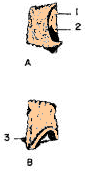

Cuestionario de Ejercicios Interactivos.
1. Marque los huesos del cráneo (neurocráneo) y deje en blanco los huesos de la cara (Viscerocráneo).
Occipital.
2. Marque las porciones del hueso Occipital.
Procesos Pterigoideos Laterales
Escama Alas Mayores
Orbitales Nasal
Petrosa Basilar
Alas Menores Timpánica
3. Identifica al hueso que se presenta en la siguiente figura y nombra los detalles que aparecen enumerados:
4. Identifica al hueso que se presenta en la siguiente figura y nombra los detalles que aparecen enumerados:

5. Marque las porciones del hueso Esfenoidal.
Procesos Pterigoideos Laterales
Escama Alas Mayores
Cuerpo Nasal
Petrosa Basilar
Alas menores Timpánica
6. Identifica al hueso que se presenta en la siguiente figura y nombra los detalles que aparecen enumerados:

7. Identifica al hueso que se presenta en la siguiente figura y nombra los detalles que aparecen enumerados:


9. Marque las porciones del hueso Etmoidal.
Procesos Pterigoideos Lámina Perpendicular
Lámina Cribosa Alas Mayores
Cuerpo Nasal
Petrosa Basilar
Alas menores Laberinto
10. Identifica al hueso que se presenta en la siguiente figura y nombra los detalles que aparecen enumerados:

11. Identifica al hueso que se presenta en la siguiente figura y nombra los detalles que aparecen enumerados:
12. Identifica al hueso que se presenta en la siguiente figura y nombra los detalles que aparecen enumerados:
13. Marque los detalles que le corresponden al hueso Cigomático
Cara Orbital Proceso Frontal
Lámina Cribosa Alas Mayores
Cuerpo Cara Temporal
Petrosa Basilar
Proceso Temporal Cara Lateral
14. Identifica al hueso que se presenta en la siguiente figura y nombra los detalles que aparecen enumerados:
15. Identifica al hueso que se presenta en la siguiente figura y nombra los detalles que aparecen enumerados:
16. Identifica al hueso que se presenta en la siguiente figura y nombra los detalles que aparecen enumerados:
17. Identifica al hueso que se presenta en la siguiente figura y nombra los detalles que aparecen enumerados:

Ver la respuesta correcta
18. Marque las porciones y detalles que le corresponden a la Maxila.
Cara Orbital Proceso Frontal
Agujero Supraorbital Alas Mayores
Cuerpo Cara Temporal
Petrosa Proceso Palatino
Cara Infratemporal Cara Lateral
19. Identifica al hueso que se presenta en la siguiente figura y nombra los detalles que aparecen enumerados:
20. Identifica al hueso que se presenta en la siguiente figura y nombra los detalles que aparecen enumerados:
21. Identifica al hueso que se presenta en la siguiente figura y nombra los detalles que aparecen enumerados:
22. Marque las porciones y detalles que le corresponden al Hueso Palatino
Proceso Piramidal Proceso Frontal
Incisura Esfenopalatina Lámina Horizontal
Cuerpo Canal Incisivo
Cresta Nasal Proceso Palatino
Proceso Esfenoidal Proceso Orbital
23. Identifica al hueso que se presenta en la siguiente figura y nombra los detalles que aparecen enumerados:
24. Identifica al hueso que se presenta en la siguiente figura y nombra los detalles que aparecen enumerados:
25. Identifica al hueso que se presenta en la siguiente figura y nombra los detalles que aparecen enumerados:
26. Marque las porciones y detalles que le corresponden al Hueso Parietal
Borde Escamoso Surco del Seno Sagital Superior
Incisura Esfenopalatina Borde Escamoso
Cuerpo Canal Incisivo
Línea Temporal Inferior Proceso Palatino
Angulo Mastoideo Borde Occipital
27. Identifica al hueso que se presenta en la siguiente figura y nombra los detalles que aparecen enumerados:

28. Identifica al hueso que se presenta en la siguiente figura y nombra los detalles que aparecen enumerados:

29. Marque las porciones y detalles que le corresponden al Hueso Temporal
Proceso Estiloideo Poro Acústico Externo
Proceso Mastoideo Borde Escamoso
Impresión Trigeminal Canal Facial
Línea Temporal Inferior Proceso Palatino
Angulo Mastoideo Meato Acústico Interno
30. Identifica al hueso que se presenta en la siguiente figura y nombra los detalles que aparecen enumerados:

31. Identifica al hueso que se presenta en la siguiente figura y nombra los detalles que aparecen enumerados:

32. Identifica al hueso que se presenta en la siguiente figura y nombra los detalles que aparecen enumerados:

33. Identifica al hueso que se presenta en la siguiente figura y nombra los detalles que aparecen enumerados:

34. Identifica al hueso que se presenta en la siguiente figura y nombra los detalles que aparecen enumerados:

35. Identifica al hueso que se presenta en la siguiente figura y nombra los detalles que aparecen enumerados:

36. Marque las porciones y detalles que le corresponden al Hueso Frontal.
Proceso Estiloideo Borde Infra Orbiatal
Proceso Cigomático Borde Escamoso
Impresión Trigeminal Glabela
Arco Superciliar Porción Orbital
Porción Nasal Surco del Seno Transverso
37. Identifica al hueso que se presenta en la siguiente figura y nombra los detalles que aparecen enumerados:

38. Identifica al hueso que se presenta en la siguiente figura y nombra los detalles que aparecen enumerados:

39. Identifica al hueso que se presenta en la siguiente figura y nombra los detalles que aparecen enumerados:

40. Marque las porciones y detalles que le corresponden a la Mandíbula.
Proceso Coronoideo Proceso Condilar
Proceso Cigomático Borde Lateral
Incisura Coronoidea Incisura Esfenopalatina
Tuberosidad Masetérica Porción Orbital
Porción Lateral Surco Milohioideo
41. Identifica al hueso que se presenta en la siguiente figura y nombra los detalles que aparecen enumerados:

42. Identifica al hueso que se presenta en la siguiente figura y nombra los detalles que aparecen enumerados:

43. Identifica al hueso que se presenta en la siguiente figura y nombra los detalles que aparecen enumerados: